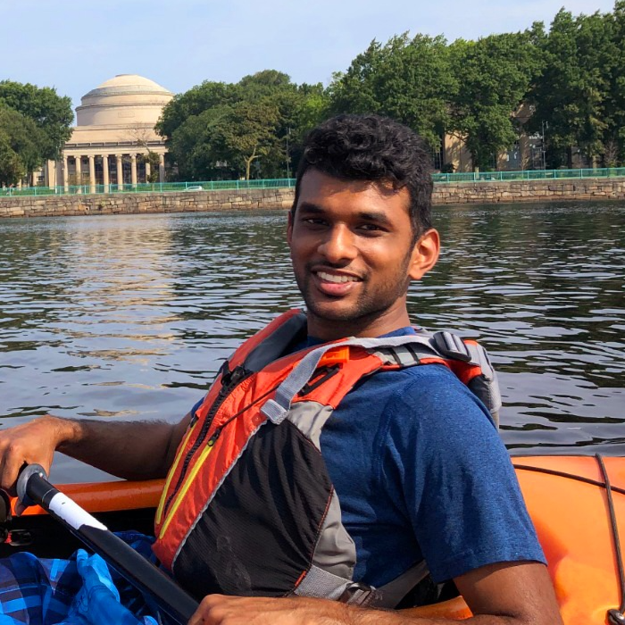

|
 |
Naveen Arunachalam
Email: naveen DOT t DOT arun AT gmail DOT com |
|
Hi, I'm Naveen! I am a Senior ML Scientist at Nosis Bio, where I develop receptor-targeted RNA medicines. Previously, I completed my PhD at MIT in the Kulik Group, where I worked on ML-guided chemical discovery informed by HPC quantum chemistry calculations. My PhD research was supported by the NSF, DARPA, and the Office of Naval Research. Prior to MIT, I majored in Chemical Engineering at Caltech, where I developed polymer electrolyte MM simulations (advised by Prof. Tom Miller; curr. CEO, Iambic) and created multiscale modeling workflows for GPCR-ligand interactions (advised by Prof. Bill Goddard; prev. cofounder, Schrodinger). I am interested in advancing AI- and ML-accelerated virtual screening of novel therapeutics, whereby safe and effective medicines are rapidly discovered on demand for any disease. In my free time, I enjoy hiking, learning new recipes, and speedrunning video games. Personal Information
ResearchI am interested in creating positive feedback loops for computational discovery of real-world therapeutics. My current research is focused on interpetability, improvability, and tractability.These three areas mutually reinforce each other: interpretability reveals how to improve AI/ML models, better models lead to higher quality and more frequent experimental data, and more data means better opportunities to probe model reasoning.
Teaching
|